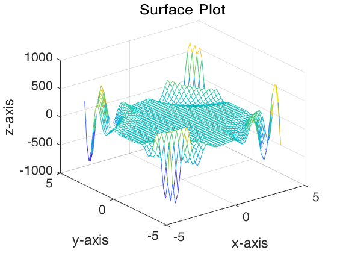
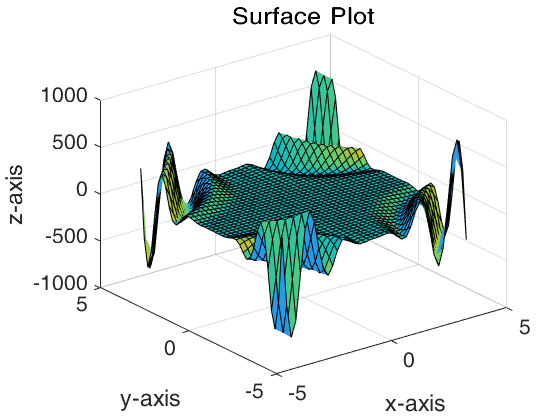
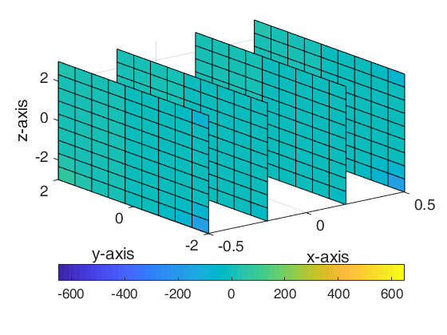
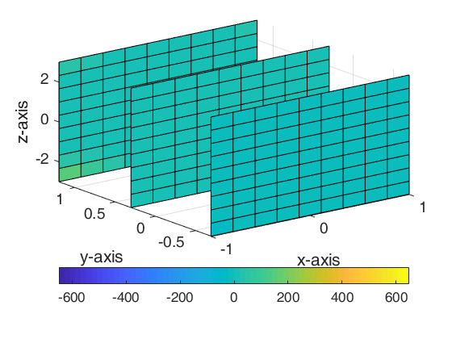

Contents
Exercise 1
clear, clc;
x = linspace(-2, 2, 1000);
y1 = x.^2;
y2 = sin(x);
p1 = plot(x, y1);
hold on;
p2 = plot(x, y2);
hold off;
legend([p1, p2], 'y = x^2', 'y = sin(x)');

Exercise 2
clear, clc;
x = linspace(0, 4 * pi, 1000);
g = @(t) (1 - t.^2).^(3 / 2);
y = arrayfun(@(x) integral(g, 0, sin(x)), x);
plot(x, y);

Exercise 3
clear, clc;
x = linspace(-4, 4, 50);
y = linspace(-4, 4, 50);
[xx, yy] = meshgrid(x, y);
zz = sin(xx .* yy) .* (xx.^2) .* (yy.^3);
figure(1);
mesh(xx, yy, zz);
title('Mesh plot');
figure(2);
contour(xx, yy, zz, 15);
title('Contour plot');
figure(3);
pcolor(zz);
colorbar;
colormap(cool);
title('Pesudo color plot');
figure(4);
surf(xx, yy, zz);
title('Surface plot');




Exercise 4
clear, clc;
x = linspace(-1, 1, 50);
y = linspace(-2, 2, 50);
t = linspace(-3, 3, 50);
[xx, yy, tt] = meshgrid(x, y, t);
v = (xx.^2) .* (yy.^3) .* (tt.^4);
xi = [-0.5, -0.2, 0.2, 0.5];
yi = [-0.7 0.3 1.2];
ti = [-2.5, -1.5, 0.8, 2.4];
slice(xx, yy, tt, v, xi, yi, ti);
xlabel('x');
ylabel('y');
zlabel('z');
colorbar('horiz');
title('Slice plot');

Exercise 5
clear, clc;
x = linspace(-2 * pi, 2 * pi, 50);
y = linspace(-2 * pi, 2 * pi, 50);
t = linspace(0, 10, 1000);
[xx, yy] = meshgrid(x, y);
for i = 1: size(t, 2)
zz = 10 .* exp(1 - t(i)) .* sin(xx) .* cos(yy);
surf(xx, yy, zz)
title("Plot where t = " + num2str(t(i)));
drawnow;
end

Exercise 6
clear, clc;
x = linspace(-2, 2, 20);
y = linspace(-2, 2, 20);
[xx, yy] = meshgrid(x, y);
zz = xx .* yy;
[px, py] = gradient(zz, .1, .1);
contour(xx, yy, zz);
hold on;
quiver(xx, yy, px, py);
hold off;
axis image;

Exercise 7
clear, clc;
total = 2000;
x = 1;
y = 1;
rec = [0.5 0 0 0.5 0 0; 0.5 0 0 0.5 0.5 0; 0.5 0 0 0.5 0.25 0.5];
for i = 1: total
plot(x, y, '.');
hold on;
drawnow;
select = randi(3);
ox = x;
oy = y;
x = rec(select, 1) * ox + rec(select, 3) * oy + rec(select, 5);
y = rec(select, 2) * ox + rec(select, 4) * oy + rec(select, 6);
end
hold off;

Exercise 8
clear, clc;
fimplicit(@(x, y) sin(x .* y) + x + y, [-5 5 -5 5]);

Exercise 9
clear, clc;
datadata = load('./data.mat');
data = datadata.xx;
data(isnan(data(:, 1)), :) = [];
data(isnan(data(:, 2)), :) = [];
scatter(data(:, 1), data(:, 2));